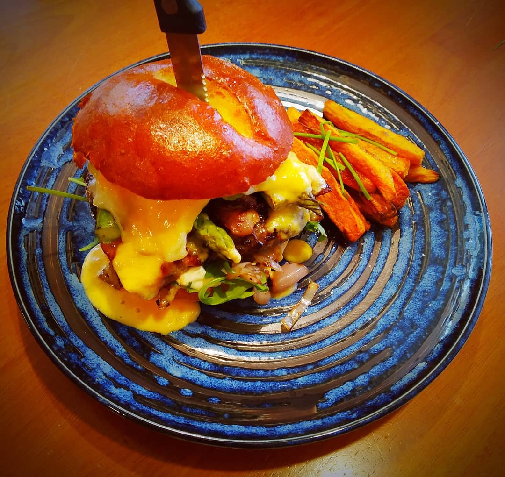

Holandská omáčka podľa @dawe_hc — Normy Jedál
Chřestýš
Máslová brioška opečená na másle, 100% hovězí, chřest, restovaná slanina, ementál, karamelizované šalotky, rukola, domácí Holandská omáčka a batátové hranolky.
#daweskitchen #burger #beef #asparagus #chrest #hollandaisesauce #holandskaomacka #homemade #sweetpotatofries #lizejkakacstetko